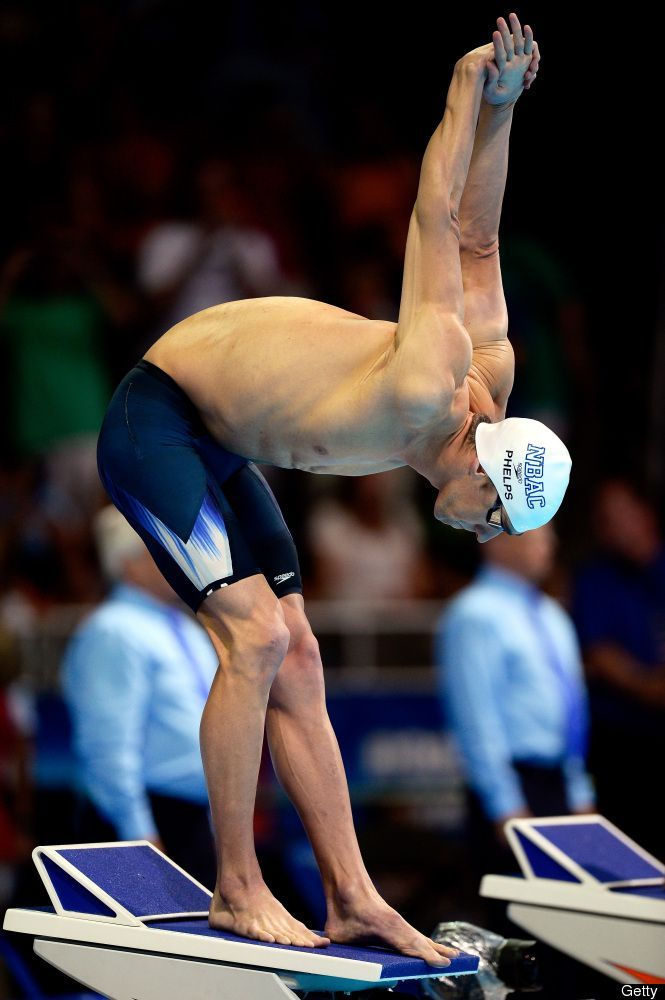
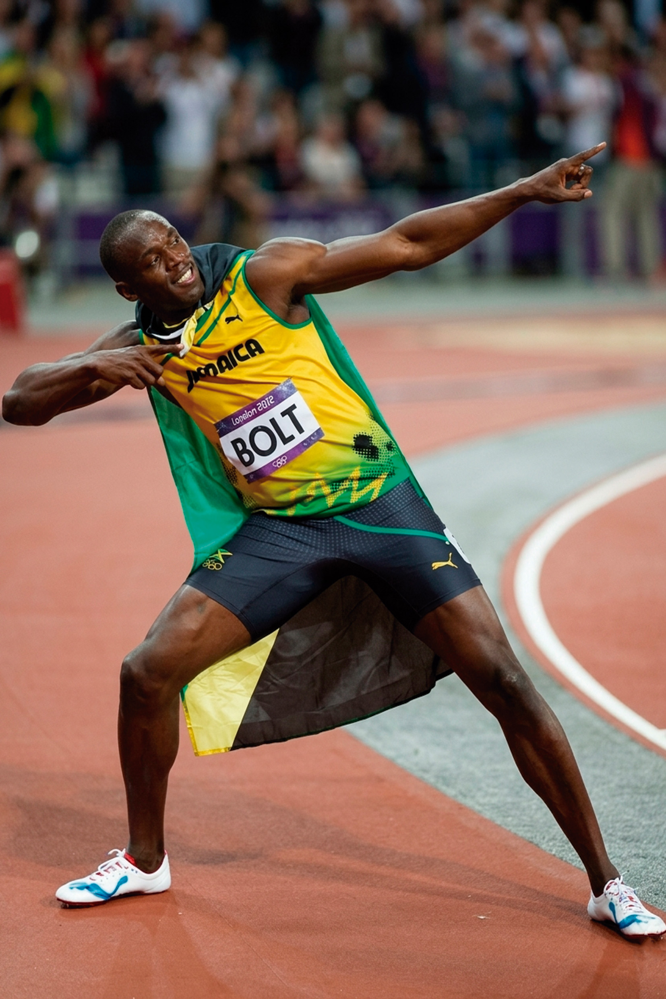
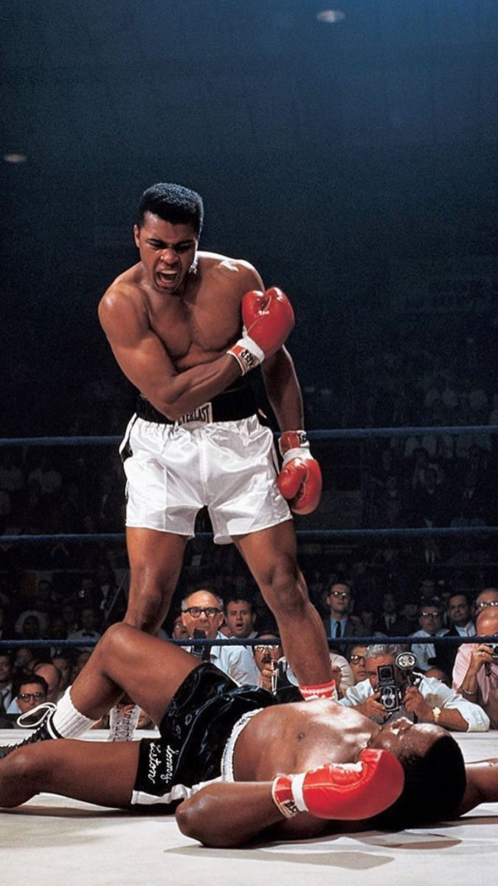
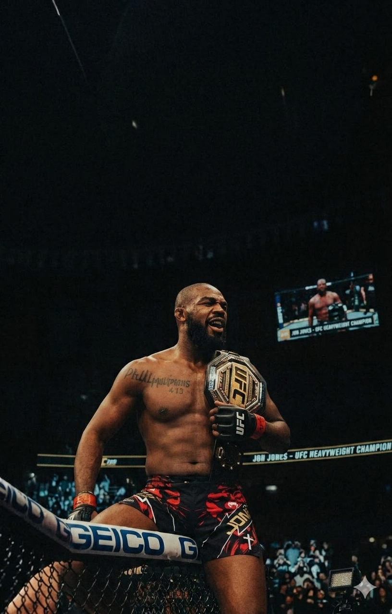
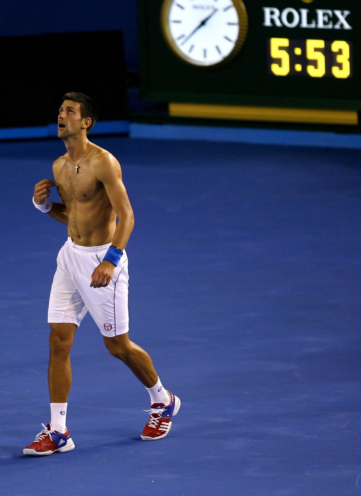

Michael Phelps
Juegos Olímpicos de Pekín – 2008
En el santuario de Pekín 2008, Michael Phelps dejó de nadar para levitar sobre el azul. Convertido en el Hombre de Vitruvio moderno, cada brazada suya fue un golpe de martillo en la historia. En su reinado, conquistó ocho oros que parecían arrebatados a los mismos dioses, redefiniendo los límites de la naturaleza humana.

Usain Bolt
Berlín – 2009
Sobre el tartán de Berlín 2009, Usain Bolt dejó de correr para desgarrar la realidad. Fue el estallido donde la potencia se encontró con la inmortalidad al detener el reloj en 9.58 segundos. Al alcanzar su apogeo, no solo rompió un récord, sino que detuvo el latido del planeta para convertirse en el rayo humano.

Muhammad Ali
Rumble in the Jungle – 1974
Muhammad Ali dejó de boxear para coreografiar una danza de resistencia y fuego. Fue una ingeniería del espíritu que transformó el ring en un acto de fe inquebrantable. En su esplendor, trascendió las cuerdas para demostrar que la grandeza nace cuando tu voluntad supera el eco de la campana.

Jon Jones
UFC 128-2011
Dentro de las ocho paredes, Jon
Jones se erigió como el verdugo
de las leyendas. Convirtió la jaula
en su guillotina personal: cada
gigante que cruzaba la puerta
entraba sabiendo que no habría
salida.Selló su destino en un 2011
de pura carnicería técnica, el año
en que ascendió al trono como el
campeón más joven de la historia,
demostrando que ante su dominio,
el destino de sus rivales ya estaba sentenciado.

Novak Djokovic
Roland Garros – 2023
Djokovic transformó el tenis en un ejercicio de asfixia absoluta. Como un muro que lo devuelve todo, convirtió la resistencia del rival en un castigo psicológico hasta desvanecer sus ambiciones. En su era, la victoria se volvió una costumbre y la derrota de sus oponentes una conclusión inevitable.
Descargar revista en PDF